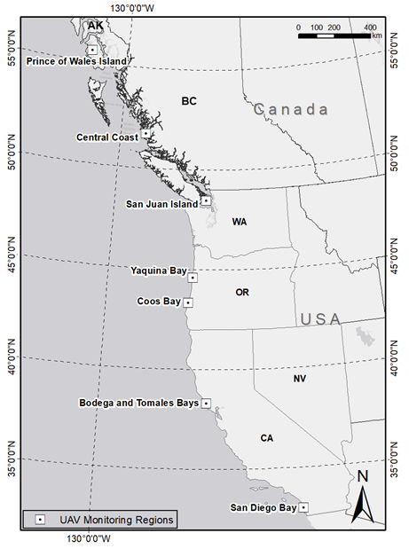
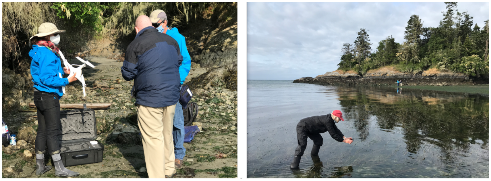
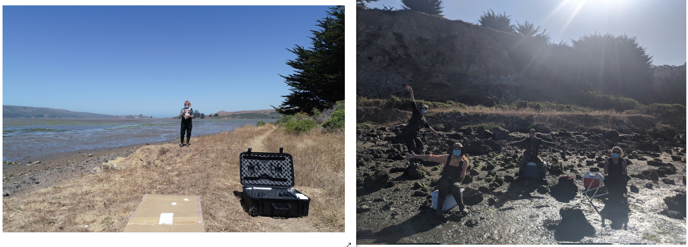
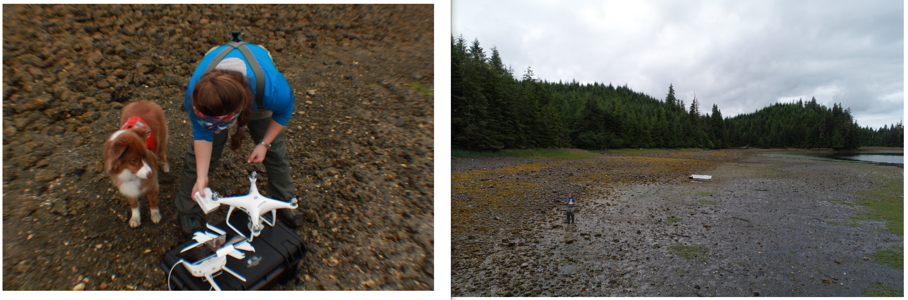
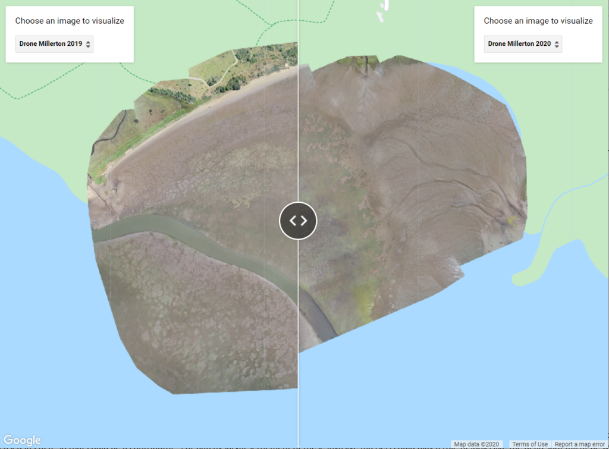

4 minutes read
Academia is struggling to continue research and education during the COVID-19 pandemic. At University of Central Florida (UCF) most travel and fieldwork (especially work in other parts of the country) are on pause to stop the spread of COVID-19. This unexpected change influenced many of our NSF grant research activities, including our West Coast drone mapping project. Although our drone team was not able to travel to the field this summer, we developed a remote drone mapping program to continue our drone mapping activities with research partners along the West Coast of the United States. By using the online teaching and training, our research partners were able to get FAA Part 107 certification, and used pre-programmed routes for their drone flight missions. We successfully mapped most sites as we did in 2019, through the power of collaboration and partnership with our incredible West Coast partners and supporting citizen scientists.

In this collaborative grant, the major goals of UCF portion are to use drones (or UAV/UAS) surveys coupled with in situ samplings to measure the health of seagrass with changes in seagrass meadow extent and density over time. In the summer of 2019, the UCF Citizen Science GIS drone team traveled along the West Coast of the U.S. for collaborative drone mapping fieldwork and initiated the drone training work. In each of the training site regions, we implemented a drone training course with research partners.

Travel was prohibited this summer because of the pandemic. However, we still were able to collect drone data with our partners. Based on our previous drone training in 2019, we further developed an open-access drone mapping training course for coastal management and seagrass conservation.

Researchers in three sites were trained to do the remote drone mapping working with us, including San Juan Island (WA) with Cornell U/UW FHL, Bodega and Tomales Bays (CA) with University of California Davis/Bodega Marine Lab, and Prince of Wales Island (AK) with University of Alaska Fairbanks. For sites in Oregon and San Diego, we will purchase commercial high-resolution satellite imagery, e.g., WorldView and Quickbird, for the study sites as the auxiliary data of the drone imagery. The site of BC, Canada will be drone mapping by our research partner in Hakai Institute.

"Through this collaborative project, I'm learning how drone mapping can have valuable applications for ecological research. Now more than ever, we need to determine how our environment is changing. Drones can help us with this more efficiently and at a finer scale than ever before." - Olivia Graham, our research partner and Ph.D. student in Harvell lab at Cornell University.
"I had a phenomenal time learning how to drone map with the Citizen Science GIS team in 2019 and remotely mapping our seagrass beds with Bo Yang in 2020. Drone imagery allows us to visualize changes in our seagrass beds at scales that were previously not possible. The images are beautiful too! These tools will be a game changer for the field of ecology by helping us describe and understand patterns and processes in coastal habitats across broad spatial scales." - Dr. Deanna Beatty, our research partner and postdoctoral scholar at University of California, Davis in Professor John Stachowicz' lab.

The drone mapping as an advanced mapping technology affords very high spatial resolution for the remotely sensed imagery. This provided a valuable measurement for seagrass meadow extent, patchiness, and dynamics through time. From a drone mapping example above we can see there is a clear change in seagrass patchiness according to drone mapping orthomosaics from 2019 to 2020. We implemented the drone mapping in 2019 while our research partners carried out the remote drone mapping in 2020!
This NSF collaborative grant is led by Dr. Emmett Duffy and the Smithsonian MarineGeo program. Dr. Timothy Hawthorne serves as the UCF PI and Dr. Bo Yang co-leads the UCF portion. Stay updated on all of our exciting work at Citizen Science GIS by following us on our social media: Twitter, Facebook, Instagram, and Linkedin.
Updated: September 16, 2020